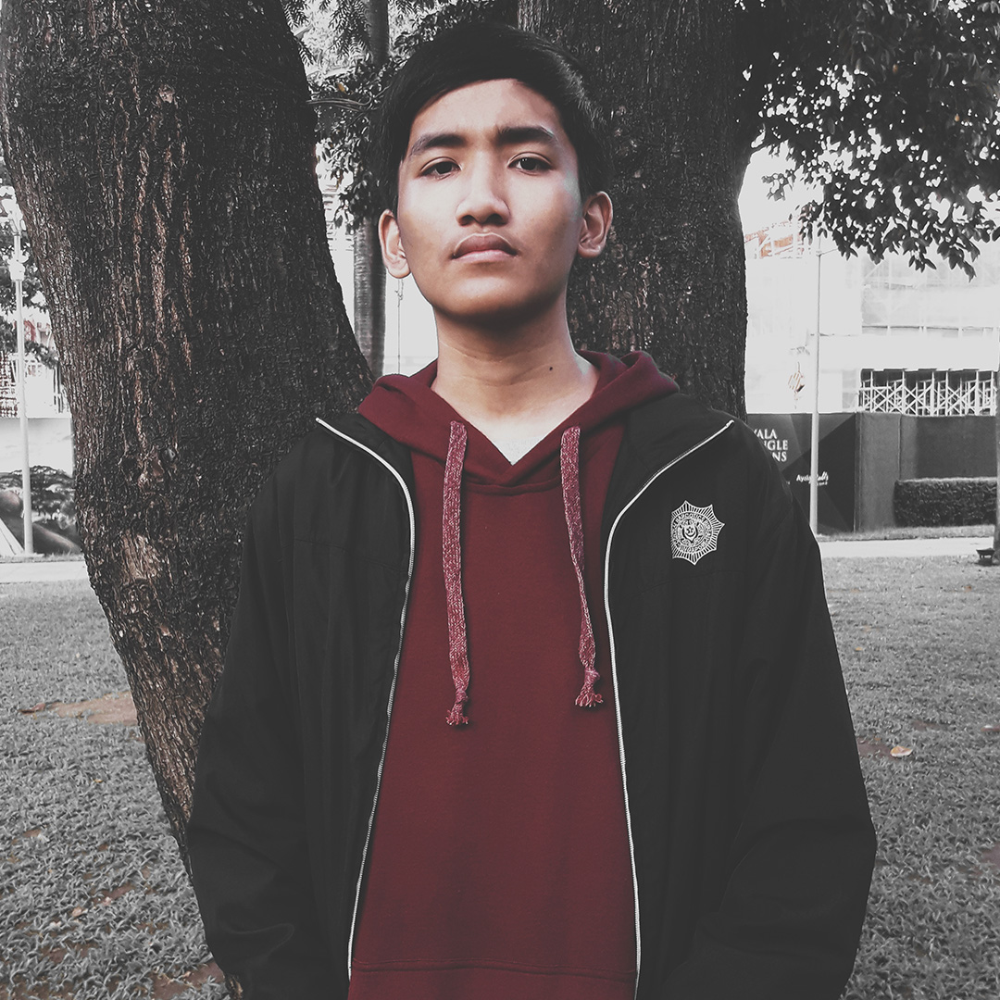

About
Karlo Fortez
Inspired by how visual design communicates through intuition. A self-taught from the digital world, I specialize in Graphic Design along with being a skilled multimedia artist. I have worked on projects including Poster Designs, Creative Campaigns, Vector Illustrations, and other digital productions.
Outside of design, I spend time delving into the world of technology. From the latest smartphone and computer innovations to playing video games.